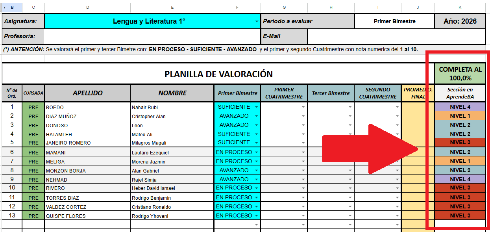
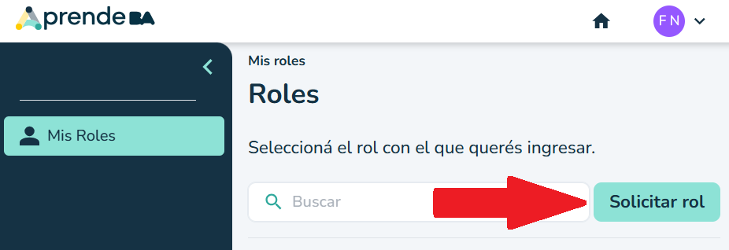
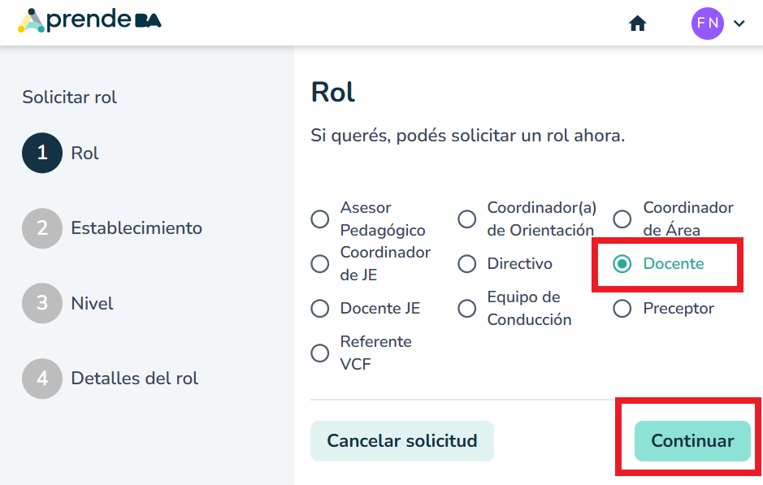
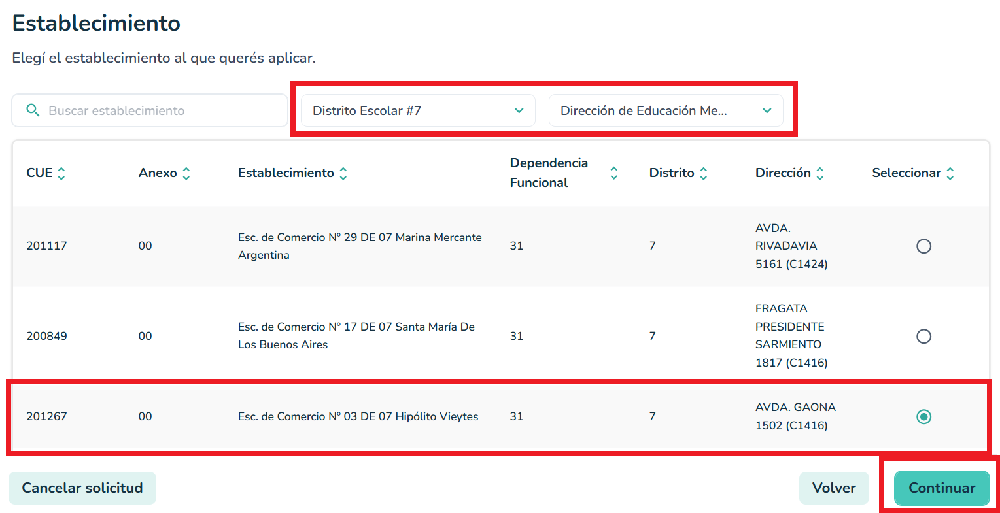
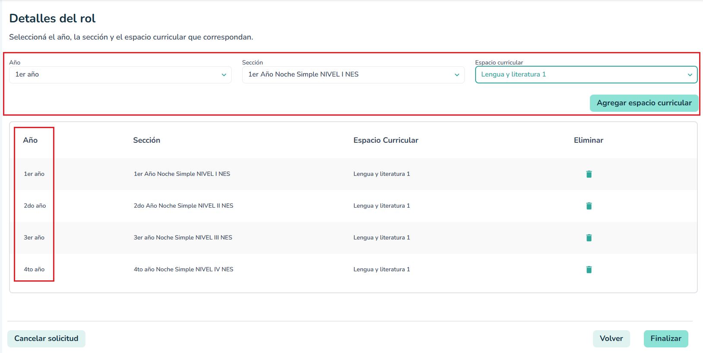
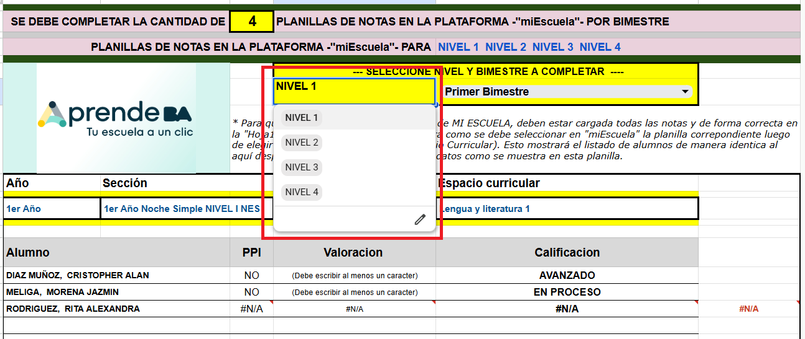

Para una correcta carga de calificaciones y visualización del listado de alumnos, es necesario solicitar los roles para los niveles que figuran en su planilla.
Revise la columna "Sección en Aprende BA" para conocer los niveles en los que están registrados sus alumnos.

Ingrese a la plataforma Aprende BA.
En el menú lateral, diríjase a la sección Mis Roles y haga clic en el botón Solicitar rol.

En la pantalla de opciones de roles disponibles, seleccione la opción Docente.
Luego haga clic en Continuar.

Busque y seleccione el establecimiento correspondiente a sus horas.
Ejemplo: Filtre por Distrito Escolar #7 y seleccione Esc. de Comercio N° 03 DE 07 Hipólito Vieytes. Presione Continuar.

IMPORTANTE:
Si tiene alumnos de distintos niveles en la misma materia (por ejemplo, 4 niveles), debe pedir el rol para cada uno de esos niveles agregando los espacios curriculares uno por uno.
Seleccione el Año, Sección y Espacio curricular, y haga clic en "Agregar espacio curricular" hasta completar todos los niveles necesarios.

Recuerde que la hoja "Aprende BA" de su Drive es una guía visual clave.
Al elegir el nivel y el bimestre en el menú desplegable, la lista se actualizará para mostrarle exactamente cómo cargar a esos alumnos específicos en la plataforma oficial.
